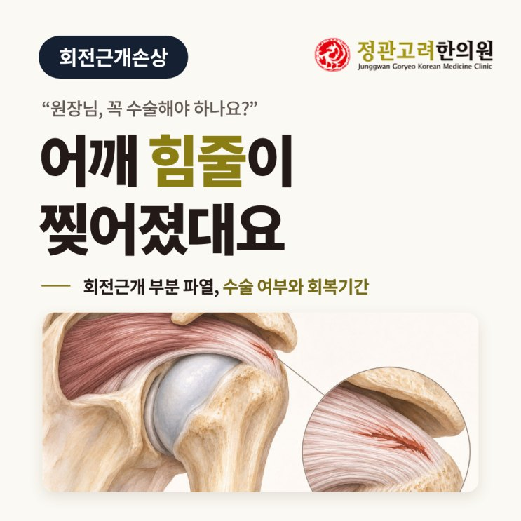
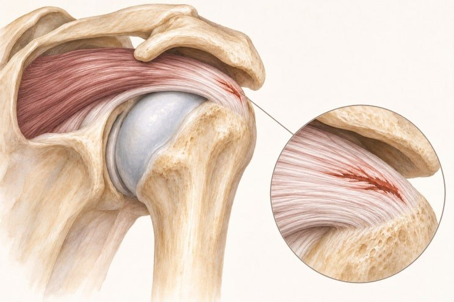
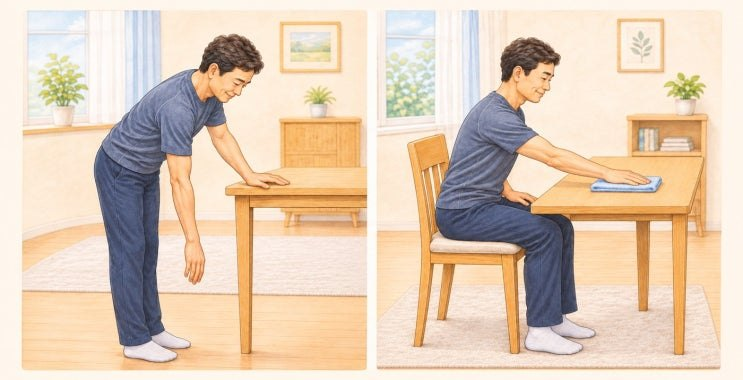
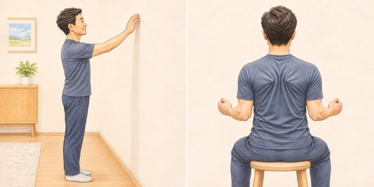
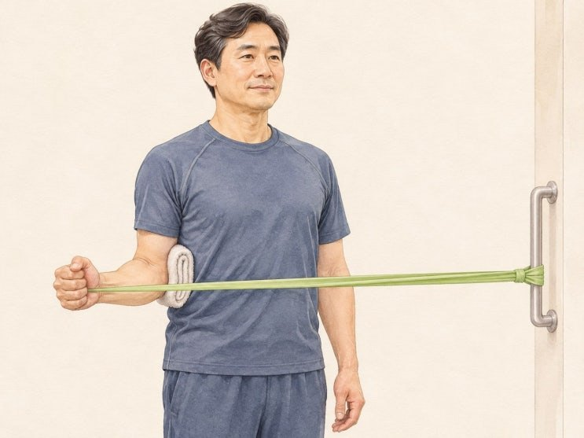

어깨 힘줄(회전근개) 부분 파열, 수술해야 하나요? 치료방법과 회복기간
이 글에서 알 수 있는 내용
- 회전근개 부분 파열, 수술이 필요한 경우와 아닌 경우
- 치료 기간과 재활운동·침치료·주사치료
- 회복 중 피할 동작과 집에서 하는 단계별 어깨 운동

어깨가 아파 검사를 받았는데 "회전근개 힘줄이 일부 찢어졌습니다"라는 말을 들으면 걱정부터 됩니다.
"수술해야 하나요?"
"얼마나 치료 받아야 낫나요?"
"운동은 언제 다시 할 수 있나요?"
진료실에서 자주 듣는 질문입니다.
결론부터 말씀드리면,
회전근개 부분 파열은 수술 없이 좋아지는 경우가 많습니다.
(단, 다친 직후 팔을 갑자기 못 들거나 힘이 크게 떨어졌다면 수술도 고려해 봐야 합니다.)
회전근개 부분 파열이란
회전근개는 어깨를 움직이고 잡아주는 네 개의 근육과 힘줄입니다.
그중 극상근 힘줄이 가장 흔히 손상됩니다.
- 부분 파열 : 힘줄이 일부만 찢어진 상태
- 전층 파열 : 힘줄이 겉부터 속까지 찢어진 상태

힘줄이 찢어지는 원인은 크게 두 가지입니다.
나이가 들면서 조금씩 닳아서
오랜 세월 어깨를 쓰면서 힘줄이 약해져 찢어집니다. 가장 흔한 경우입니다.
다쳐서
넘어지며 팔을 짚거나, 무거운 것을 갑자기 들다가 찢어지기도 합니다.
수술해야 하나요?
회전근개 부분 파열은 대부분 수술 없이 치료할 수 있습니다.
"그냥 두면 더 찢어지지 않을까요?"
그럴 수 있습니다.
하지만 수술 없이 지켜본 여러 연구에서 약 2년 동안 환자 4명 중 3명꼴로 파열이 더 커지지 않았습니다.1
그렇다고 그냥 방치해도 된다는 뜻은 아닙니다.
어깨에 무리가 가는 동작을 피하고, 치료하면서 회복 상태를 살펴봐야 합니다.
통증이 다시 심해지거나 팔의 힘이 떨어지면 진료를 받고, 필요하면 초음파나 MRI로 확인합니다.
이럴 때는 정형외과에서 수술 상담을 받으세요
- 넘어지거나 다친 뒤 팔을 거의 들지 못할 때
- 예전보다 팔을 들거나 바깥으로 돌리는 힘이 뚜렷하게 약해졌을 때
- 힘줄이 절반 이상 찢어지고 팔을 쓰기가 계속 힘들 때
- 충분히 치료했는데도 밤에 아프고 생활이 불편할 때
특히 다친 뒤 갑자기 팔에 힘이 빠졌다면 몇 달씩 기다리지 말고 바로 진료 받으세요.2
얼마나 치료 받아야 하나요?
- 처음 몇 주
통증이 줄어드는지 살펴봅니다. - 3개월
치료하며 경과를 봅니다.
통증이 좋아져도 힘이 돌아오는 데는 시간이 더 걸립니다. - 6개월
수술을 생각하기 전까지는 6개월 정도 충분히 치료하는 것이 좋습니다.3
검사 결과에 너무 겁먹지 않으셔도 됩니다.
실제로 부분 파열이 있어도 아프지 않은 사람이 많습니다.4
찢어진 힘줄이 검사 사진에서 완전히 붙지 않았더라도, 통증 없이 일상 생활을 하는 분들이 있습니다.
아프지 않고 팔의 힘과 움직임이
충분히 돌아왔다면, 회복된 것으로 봅니다.
다만 힘줄이 완전히 아문 것은 아닐 수 있으므로, 무리한 운동은 조심해야 합니다.
치료는 어떻게 하나요?
수술이 아니라면, 찢어진 힘줄을 바로 붙이는 주사나 약은 아직 양방에도 한방에도 없습니다.
그래서 치료의 목표는 통증을 줄이고, 힘줄이 스스로 회복할 수 있는 환경을 만드는 것입니다.
치료의 중심, 재활운동
재활운동은 어깨의 움직임과 힘을 되찾는 데 도움이 됩니다.
그래서 진료지침에서도 운동재활을 우선 치료로 권고합니다.5
침치료는 재활운동을 할 수 있게 돕습니다
통증이 심하면 재활운동을 제대로 하기 어렵습니다. 이때 침치료가 도움이 됩니다.
침치료는 통증을 줄이고 굳은 어깨를 풀어 주어, 재활운동을 시작하기 쉽게 합니다.
여러 임상시험을 모아 분석한 연구에서, 침치료는 치료 초기(3개월 이내)에 통증을 줄이고 어깨의 움직임을 개선하는 데 도움이 됐습니다.6
동물실험에서는 전침(침에 약한 전기를 흘려 주는 치료)이 손상된 힘줄의 염증을 줄이고, 힘줄을 더 튼튼하게 했다는 결과도 있습니다.7
다만 사람에게서 같은 효과가 있는지는 아직 연구가 더 필요합니다.
양방 주사치료는 필요할 때만
밤에 아파 잠을 못 자거나 통증이 너무 심하다면, 양방 주사치료를 함께 받으실 수 있습니다.
스테로이드 주사는 통증과 염증을 줄이지만, 찢어진 힘줄을 붙이는 치료는 아닙니다.
진료지침에서는 단기간의 통증 완화를 위해 스테로이드 주사 한 차례 정도만 고려할 수 있다고 합니다.8
반복해서 맞으면 오히려 힘줄에 좋지 않을 수 있어 주의해야 합니다.9
혈소판 풍부 혈장(PRP) 주사도 쓰입니다. 통증을 줄이는 데 도움이 될 수 있지만, 연구마다 결과가 달라 아직 확실한 근거는 부족합니다.3,10
힘줄을 약하게 만드는 요인 피하기
- 흡연은 회전근개 파열의 위험 요인입니다. 이번 기회에 끊으시기 바랍니다.11
- 아픈데 무리해서 운동하면 손상된 힘줄에 부담을 줄 수 있으니 피하셔야 합니다.
회복 중에는 이런 동작을 피하세요
치료 받는 동안에는 다음과 같은 어깨에 큰 힘이 들어가는 동작을 피하세요.
- 높은 선반 위의 물건 내리기
- 차 안에서 몸을 뒤로 돌려 뒷자리 물건 잡기
- 아픈 쪽 어깨를 깔고 누워 자기
- 무거운 덤벨 들기와 팔굽혀펴기
- 아픈데도 억지로 하는 스트레칭
골프와 배드민턴 등의 운동은 충분히 회복될 때까지 쉬세요.
운동을 하다 보면 나도 모르게 무리하게 되기 쉽습니다.
통증이 없어지고 팔의 힘과 움직임이 충분히 돌아온 뒤 다시 시작하세요.
집에서 하는 어깨 재활운동
가벼운 재활운동은 힘줄을 바로 붙이는 운동이 아니라, 어깨가 굳지 않도록 하고 나중에 힘을 되찾기 위한 것입니다.
통증이 심할 때는 쉬는 것이 먼저이고, 통증이 줄면 아프지 않은 범위에서 시작하세요.
[1단계] 통증이 조금 가라앉으면
- 추 운동 : 탁자를 짚고 숙여, 힘 뺀 팔을 작게 흔듭니다.
- 탁자 밀기 : 탁자 위 수건을 앞으로 천천히 밀어 줍니다.

[2단계] 팔을 움직이기가 조금 편해지면
- 벽 타기 : 손가락으로 벽을 타고, 아프지 않은 높이까지만 올라갑니다.
- 날개뼈 모으기 : 가슴을 펴고 날개뼈를 모아 5초 버팁니다.

[3단계] 통증이 충분히 가라앉으면
- 밴드 바깥 돌리기 : 팔꿈치를 옆구리에 붙이고, 약한 밴드를 천천히 바깥으로 당깁니다.

운동하다 아프거나 다음 날 더 아프면, 운동량을 줄이거나 쉬세요.
꼭 기억하세요
오늘 내용을 다섯 가지로 정리하면 이렇습니다.
- 어깨 힘줄(회전근개)의 부분 파열은 대부분 수술 없이 좋아집니다.
- 다친 뒤 팔을 못 들거나 힘이 확 빠지면 바로 진료를 받으세요.
이때는 수술이 필요할 수 있습니다. - 치료는 3~6개월 꾸준히 받으세요.
통증은 먼저 줄고, 힘은 천천히 돌아옵니다. - 회복의 중심은 재활운동입니다.
침치료는 통증을 줄여 재활운동을 할 수 있게 돕습니다. 스테로이드 주사는 통증이 심할 때 한 차례 고려할 수 있지만, 반복해서 맞는 것은 신중해야 합니다. - 회복될 때까지 스포츠 활동은 쉬고,
어깨에 무리가 가는 동작은 피하세요.
MRI 사진 상 깨끗해지는 것보다,
아프지 않고 팔을 편하게 쓰는 것이 진짜 회복입니다.
조급해하지 마시고, 한 단계씩 어깨를 회복해 나가시기 바랍니다.
한의학박사 · 한방재활의학과 전문의 박장우
참고문헌 · 그림 안내
- Garcia MJ, et al. Disparities in Rotator Cuff Tear Progression Definitions and Rates: A Systematic Review. JBJS Open Access. 2024;9(4):e24.00097. doi.org/10.2106/JBJS.OA.24.00097
- AAOS OrthoInfo. Rotator Cuff Tears.
- Kany J, et al. (ESSKA-ESA). The 2026 formal consensus on partial-thickness posterosuperior rotator cuff tears, Part 2. Knee Surg Sports Traumatol Arthrosc. 2026. doi.org/10.1002/ksa.70622
- Johns Hopkins Medicine. Partial Rotator Cuff Tear.
- Desmeules F, et al. Rotator Cuff Tendinopathy: Diagnosis, Nonsurgical Medical Care, and Rehabilitation—A Clinical Practice Guideline. J Orthop Sports Phys Ther. 2025;55(4):235-274. doi.org/10.2519/jospt.2025.13182
- Zhang HN, et al. Efficacy comparison between acupuncture and other modalities in the treatment of rotator cuff diseases: meta-analysis of randomized controlled trials. Am J Transl Res. 2024;16(2):599-616. doi.org/10.62347/NCRJ1270
- Song W, et al. Electro-acupuncture promotes repair of rotator cuff injury in rats. Nan Fang Yi Ke Da Xue Xue Bao. 2020;40(10):1513-1517. doi.org/10.12122/j.issn.1673-4254.2020.10.19
- American Academy of Orthopaedic Surgeons (AAOS). Management of Rotator Cuff Injuries: Evidence-Based Clinical Practice Guideline. 2025. aaos.org/rccpg2025
- Puzzitiello RN, et al. Adverse impact of corticosteroid injection on rotator cuff tendon health and repair: a systematic review. Arthroscopy. 2020;36(5):1468-1475. doi.org/10.1016/j.arthro.2019.12.006
- Desouza C, Shetty V. Effectiveness of platelet-rich plasma in partial-thickness rotator cuff tears: a systematic review. J ISAKOS. 2024;9(4):699-708. doi.org/10.1016/j.jisako.2024.04.010
- Tashjian RZ. Epidemiology, natural history, and indications for treatment of rotator cuff tears. Clin Sports Med. 2012;31(4):589-604. doi.org/10.1016/j.csm.2012.07.001
그림 안내
- 그림은 설명을 돕기 위해 만든 것입니다. 실제 운동은 어깨 상태에 따라 달라질 수 있습니다.